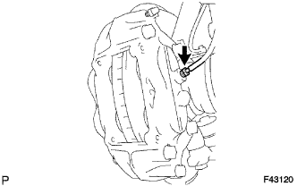
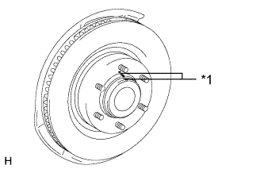
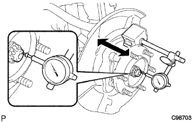
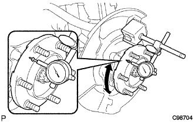

СТУПИЦА ПЕРЕДНЕГО КОЛЕСА > ПРОВЕРКА БЕЗ СНЯТИЯ С АВТОМОБИЛЯ |
| 1. СНИМИТЕ ПЕРЕДНЕЕ КОЛЕСО |
| 2. СНИМИТЕ ТОРМОЗНОЙ ЦИЛИНДР ПЕРЕДНЕГО ЛЕВОГО ДИСКОВОГО ТОРМОЗА В СБОРЕ |
|  |
С помощью разрезной головки отсоедините трубопровод тормозной системы от колесного тормозного цилиндра дискового тормоза в сборе.
 |
Выверните 2 болта и снимите колесный тормозной цилиндр дискового тормоза в сборе.
| 3. СНИМИТЕ ПЕРЕДНИЙ ДИСК |
|  |
Если диск планируется использовать повторно, нанесите метки на диск и ступицу колеса.
| *1 | Метка |
Снимите передний диск.
| 4. СНИМИТЕ СМАЗОЧНЫЙ КОЛПАЧОК СТУПИЦЫ ПЕРЕДНЕГО КОЛЕСА |
С помощью отвертки и молотка снимите смазочный колпачок ступицы переднего колеса.
| 5. ПРОВЕРЬТЕ ЛЮФТ ПОДШИПНИКА СТУПИЦЫ ПЕРЕДНЕГО КОЛЕСА |
|  |
Используя индикатор часового типа, измерьте люфт вблизи центра ступицы колеса.
| 6. ПРОВЕРЬТЕ БИЕНИЕ СТУПИЦЫ ПЕРЕДНЕГО КОЛЕСА |
|  |
С помощью индикатора часового типа измерьте биение на поверхности ступицы с наружной стороны болтов крепления колеса к ступице.
| 7. УСТАНОВИТЕ СМАЗОЧНЫЙ КОЛПАЧОК СТУПИЦЫ ПЕРЕДНЕГО КОЛЕСА |
Установите новый смазочный колпачок ступицы колеса.
| 8. УСТАНОВИТЕ ПЕРЕДНИЙ ДИСК |
Совместите метки и установите передний диск.
| 9. УСТАНОВИТЕ КОЛЕСНЫЙ ТОРМОЗНОЙ ЦИЛИНДР ЛЕВОГО ДИСКОВОГО ТОРМОЗА В СБОРЕ |
Закрепите цилиндр дискового тормоза в сборе 2 болтами.
С помощью разрезной головки подсоедините трубопровод тормозной системы к колесному тормозному цилиндру дискового тормоза в сборе.
| 10. УСТАНОВИТЕ ПЕРЕДНЕЕ КОЛЕСО |